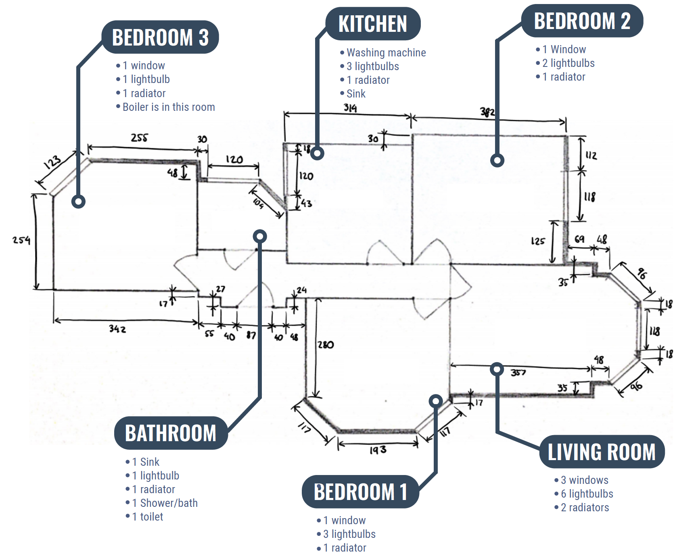
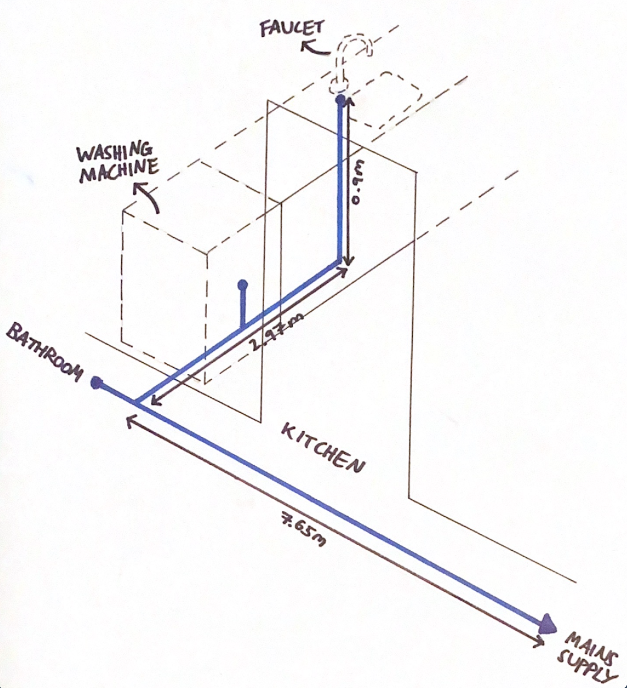
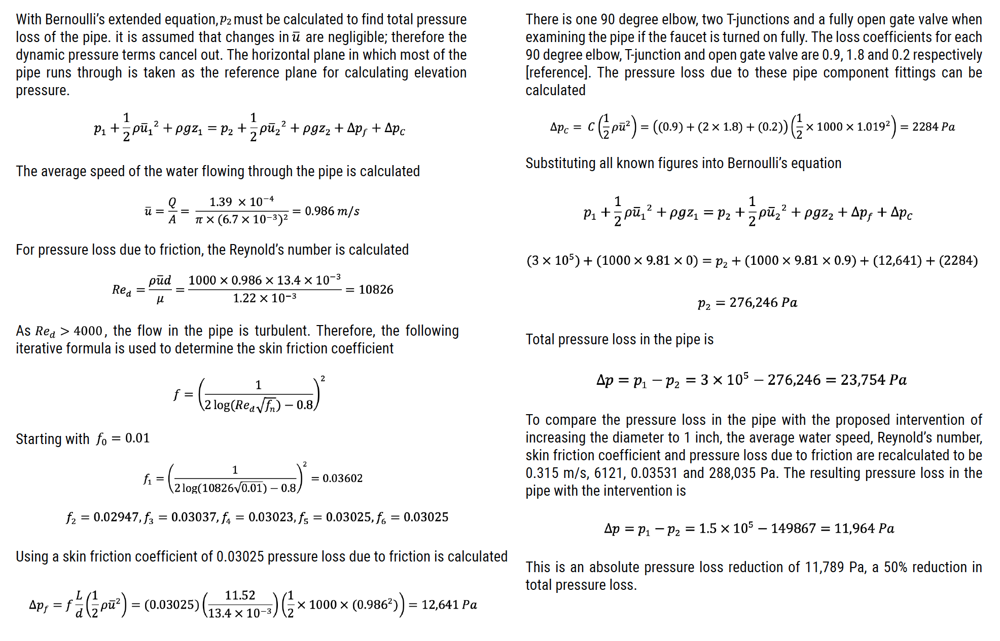
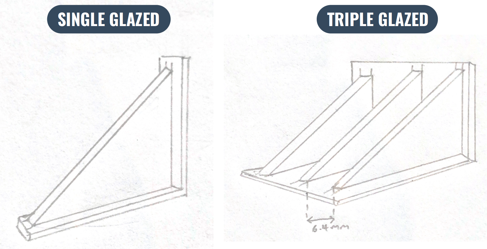
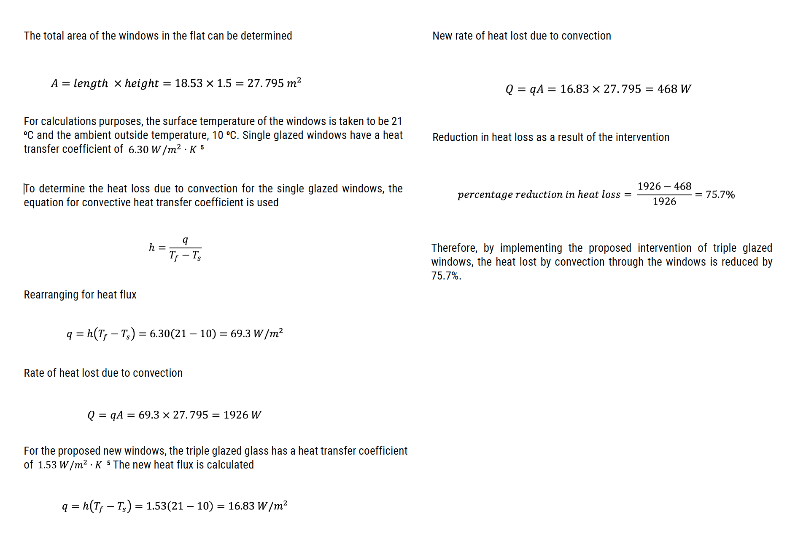
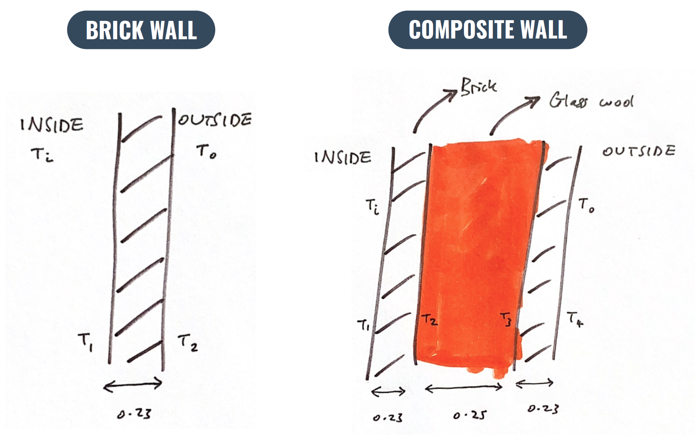
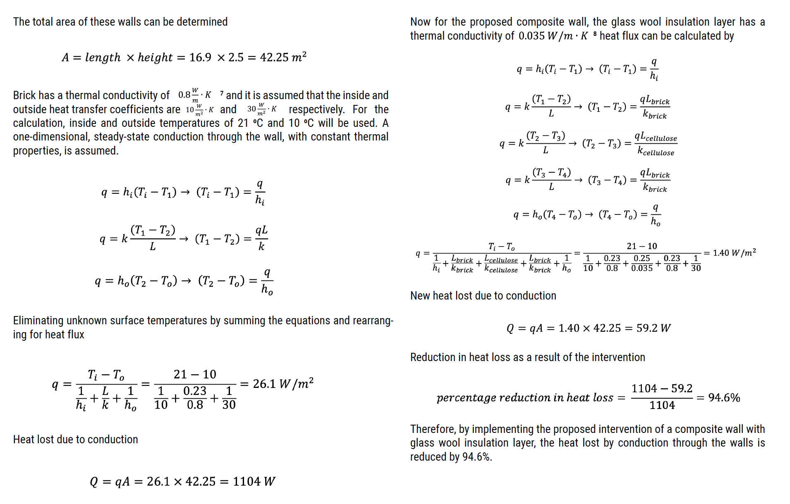
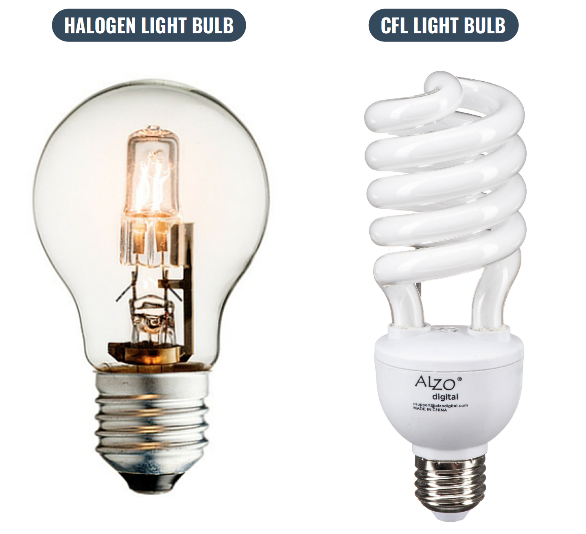
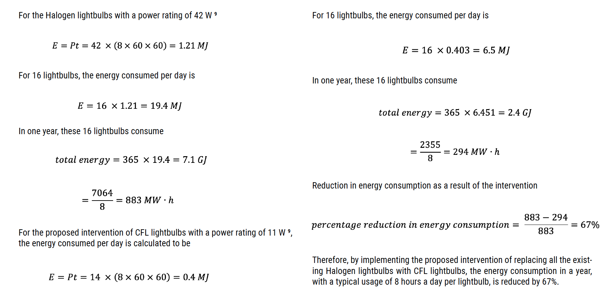

Louis Cutner
I wanted to investigate my current flat, to look into how eco-friendly it was, and what proposals I
could make to bring the flat’s energy consumption
closer to net zero. The flat consists of three bedrooms, one bathroom, one kitchen, one living room and a hall
way. The flat is situated within a
relatively old mansion block and so has no new technological interventions intended to save energy; it has
single glazed windows for example.
Firstly I looked at the mains cold water supply, and suggested an intervention of doubling the pipe diameter
from ½ inch to 1 inch. This was
calculated to reduce pressure loss in the pipe due to friction by 50%, hence saving energy. I looked in detail
at the cold water supply from the
mains to the faucet in the kitchen as an example, however the proposed intervention could be applied to all
water pipes throughout the flat.
Secondly, I looked at replacing the single glazed windows in the flat to triple glazed windows – with each pane
of glass separated by 6.4 mm of
air. It was calculated that by implementing triple glazed windows, the heat loss due to convection in the flat
through the windows was reduced by
75.7%.
The third intervention was to create a composite wall with 0.25 m of glass wool insulation in between two layers
of brick – instead of currently
only a single layer brick wall. By implementing this intervention the heat lost by conduction through the walls
is reduced by 94.6%.
The final intervention was to replace the 16 Halogen light bulbs with Compact Fluorescent (CFL) light bulbs. By
implementing this intervention,
the energy consumption in a year with typical usage of 8 hours a day per lightbulb is reduced by 67%.
FLAT FLOORPLAN AND ROOMS
Below is the floorplan of the flat, containing dimensions of each wall, and a breakdown of the
components in each room relating to pipe flow and electricity.

INTERVENTION 1
The first intervention to my flat is
regarding the mains water supply. I will
look specifically at the pipe supplying
cold water to the faucet in the kitchen,
to show the energy saving effects of
doubling the pipe diameter from 1/2
inch to 1 inch. This reduces pressure
loss in the pipe due to friction, hence
saving energy. To the right I have drawn
the path of the pipe from the mains
supply in the street to the faucet.
Assumptions:
• The pipes currently used are 1/2 inch
CPVC pipes¹ with an internal diameter
of 0.528 inches ² = 13.4 mm
• The volume flow rate of cold water is
approximately 2 gallons per min ¹
= 1.39 x 10-4 m³/s
• The same pipe is used from the mains
to the faucet
• The temperature of the water inside the
pipe is approximately 12.5 degrees
Celcius³, and so the water’s dynamic
viscosity = 1.22 x 10-3 Pa . s
• The pressure of the water from the
mains supply is 3 bar4


INTERVENTION 2
The second intervention to my flat is
regarding the windows. As the flat is
relatively old, all of the windows are
single glazed. I will look at the effect of
replacing all of the windows in the flat
with tripple glazed windows with an air
gap of 6.4 mm between each pane of
glass. This insulation means the energy
lost due to convection through the
windows is dramatically decreased.
Assumptions:
• The total length of windows was
measured to be 18.53 m
• The windows remain tightly sealed the
entire time, and there are no leaks


INTERVENTION 3
The third intervention to my flat is
regarding the insulation of the walls.
Currently, due to the age of the building,
all of the walls are single thickness brick
with no insulation. I will look at the
energy savings from constructing two
brick walls, with a 25 cm layer of glass
wool insulation in the middle. The
insulation dramatically reduces the
energy losses due to conduction though
the walls.
Assumptions:
• Space for the additional walls could be
accomodated for
• There is no energy loss to the flats
above and below, or the the hallway
outside the flat
• Insulation is 230 mm thick6


INTERVENTION 4
The fourth intervention to my flat is
regarding the light bulbs. I will look at
replacing the Halogen light bulbs with
Compact Fluorescent (CFL) light bulbs.
This would significantly reduce the
energy consumption in each room as
the CFL light bulbs are much more
energy efficient than the Halogen light
bulbs.
Assumptions:
• All the light bulbs in the flat are the
same
• There are 16 lightbulbs in the flat
• The light bulbs have an output of 800
lumens

